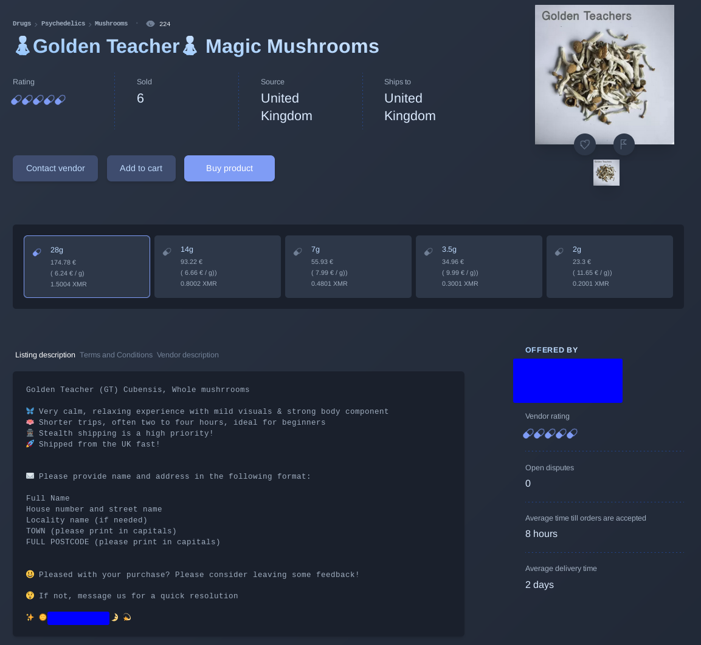
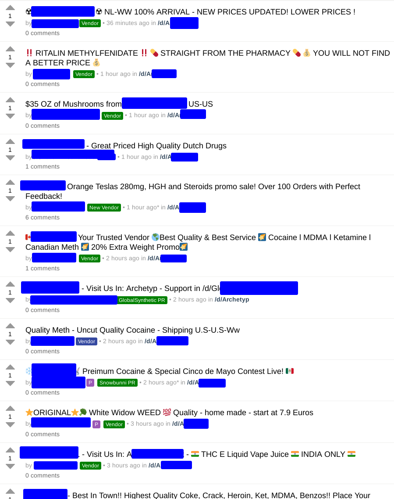
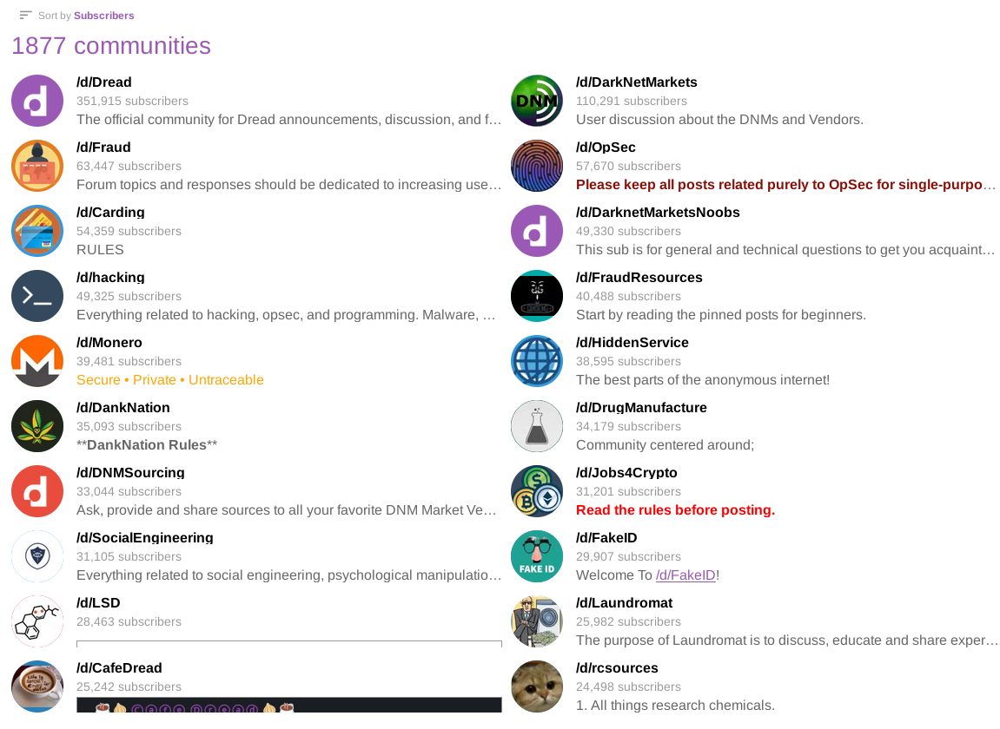

If you don't know what you are looking for? Not a lot. If you know what you are looking for, then you know what to expect. The dark web is just another internet and as such, it's not too far off of what you would imagine goes on that you can see.
Almost all economic transactions that take place on the dark web cannot use real currency. This is due to the obvious security issues that come with using a FIAT payment processor for potentially illegal things when you are trying to remain as anonymous as possible. In current year, the most used form of payment on the Dark Web is a cryptocurrency called Monero. In simple terms, Monero is what most people think Bitcoin is. It is fully anonymous and uses many different security features to ensure that transactions are not tracable.
Note that Monero was NOT explicitly made for the purpose of illicit transactions. It was made as a privacy tool. However, there is a significant overlap between the privacy community and people who need to stay private for more nefarious reasons.
If you are trying to break the law with drugs, fraud, or other assorted means, the Dark Web is probably the most secure place to be doing so.
Before continuing, I must stress that no one on our team condones criminal activity of any kind. Please consult your local laws before doing something you could regret.
While The Silk Road may have shut down years ago, drug marketplaces are still alive, well, and more secure than ever before. Sites such as A*** aim to be a "dark web Amazon" and try to make it as easy as possible to order illicit substances.
Most advertising for drug related products happen on the appropriate subdread back on Dread. Many vendors will post their offerings on Dread to try and garner sales and the good will of the people.
Dread is also where a lot of people will share advice regarding various types of crime. Popular non-drug related crime discussions are hacking, fraud, money laundering, and social engineering.
